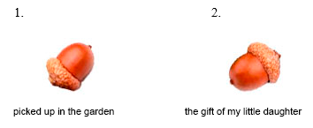

full contents of the book:
Nothing & Dot (Prolog)
Purpose
Contemplated
Entity
Consciousness
Two-Aspect (dualistic) Entity
Fourth dimension and ...
Society and Humanity
Fifth dimension and ...
Firstoccurence
Act of the “I”
The Proc.of study.the Act of "I"
The Meaning of Being
Development of Entity
The Collective Reality
the Entity Development System
Echo (Reflection)
Real Aspect of the Global I
About Worldview
Space-Time
Attitude toward Yourself
Attitude toward your body
Laziness
Fear
Hope (...for Miracle)
Adaptation
Identity of Personality
Relation [ Reason | Body ]
Free Will
Hard problem of Consciousness
Indistinguish and Identity
Matter
Gnoseology
Epistemology
Separation
to the home page
— Chapter Thirty-Four —
————————————————————————————
————————————————————————————
2. EPISTEMOLOGY ( EPISTEMOLOGY )
The Subject of Gnoseology in relation to [ Subject | Object ], can be considered disclosed - as much as was necessary to determine Its (Subject's) tasks for a long time. But, regarding Our Goals, set at the very beginning, we will continue the study for the Disclosure of the breadth, this - literally: All-encompassing Bottomless Theme <without end>;
Now we'll look into the relation [ Object | Cognition ], or rather, we should draw a ‘clear line’ between the concepts: ‘Gnoseology’ and ‘Epistemology’, because there is a very big difference between them, but many continue to confuse them, or often replace one with the other, and 'this is not entirely convenient', because one thing is the mechanism of perception (realization) of an object, and another is the awareness of the Essence, meaning and purpose;
Epistemology includes not only the direction designated (here) although everything is very closely interconnected. First figure out how we interpret objects, or rather, how the Our Reason perceives objects and situations as ‘raw material’ intended for ‘it’ further processing, identification, qualification, subsequent analysis, taking into account relationships, and a defined Role in a specific situation. We will not discuss the mechanism of extracting experience (or, not yet about this), but about the presence of a role of an object in any situation, that is, about how we perceive an object as significant – participating;
Note: In fact, the object participating in the Situation influences It as a Alive Participant would influence (and sometimes even more). From the already known position, we assert that the conditions are controlled by the ‘Entity Development System’, as a Superstructure in Consciousness, regulating the degree of complexity of Situations;
This is necessary for the content to match the abilities of the participants, otherwise we will not be able to understand what is happening ("World for the Alives"). "Consciousness" is only a 'Skilled Performer', roughly speaking "Executor of the Will of the Entity", as we have found out, this does not deprive us of Our Own Will, since the Scenario is absent, or more precisely the System takes care of the uniqueness of situations, reliably providing us with constant influx of New Experience;
Scenario: ‘Ensuring the Absence of any scenario’, and you can hope on your scenario, but – it will always be at least a little bit, but definitely different, not quite according to the Plan;
The impression is that the object is not located by chance, exactly where it is supposed to be, but we are free to think (and often complain) that there is an “Evil Force” behind the object :), and it is located in a place that is not convenient for us - we are mistaken, the objects are in the most advantageous place for us, and are located in the most rational way, for this reason they provide effective extraction of experience;
Consequently, our opinion about the alive essence of objects is not devoid of common sense, but also literally corresponds to reality: We are Actively Developing | participating in the 'Development of the Entity', which is one and the same thing;
Since in programming, "Interpretation" is the processing and execution of a command in the program code or request, then here we mean the 'Code Initiator' as Consciousness, and the recipient, i.e. and the processor (handler) – 'Reason', but this must be considered in both directions, and from Reason to Consciousness. It is quite logical to assume that Consciousness uses and offers an accessible interface and a Single Data Format (API?) for all beings. Why necessarily a Single one? – because the "Entity" is concerned with Development, and nothing contributes to This as much as a Single universal System. But, this is not a common communication system (for us, there is 'no yet’, and this should not be confused), although we use some principles right now, this Network will develop together with our Civilization;
“Interpretation” – decoding the wave and bringing the data into a format corresponding to the level of Reason;
Interpretation can be considered a fundamental part of the processor (handler), and a psychically active function of the Reason. This can be felt by turning your head and looking at an object that was previously on the periphery, away from the ‘focus point’. Turn around and look at things that were hidden from your sight, behind your back. Try to feel the phenomenon of Interpretation as a fact of occurrence (and mental touch), then turn around looking at any photo, sharpen your attention and feel the movement of feelings, and again turn to another object, to a piece of paper with text, or a book (that you recently read). Feel a light, barely perceptible sensation when you focus your gaze. Do you feel this sensation? – this is how ‘the concretization of a thing in the aspect of semantic clarity’ occurs. If you feel important details, then you will quickly realize the meaning of the concepts: “Identification” and “Qualification”, these are integral and most important functions of Reason for an intellectual being – they are all individual and subjective, which is why it is so difficult to understand each other ;)
"Identification" is recognition, definition of a 'thing', and not necessarily 'objects in obvious reality', these can also be thought forms, but even they have to be recognized,
"Qualification" is a mental qualification in relation to an object (including a alive person, and even especially to a person). It is strange, but often the judgment is associative, namely: it is natural for a person to see an unfamiliar face and make a 'conclusion about the properties', such as bad / good. Qualification - is the essence of comparing feelings and all the <'mentally complex'> criteria available to Reason. Simple examples: familiar / and unfamiliar, scary / and not scary, dangerous / and safe, cold / and hot; also related to more complex aspects, for example, ethical: evil / and good, honest / and not honest, righteous / and not righteous, etc., we hope everything is simple and clear here;
Thus, Epistemology includes a sequence of iterations of Reason, as a result of which experience is extracted – as exhaustive, and available, knowledge about one specific object. The process of acquiring knowledge about an object is not limited to (one lesson and) a moment of reality, but by participating in the analysis of situations, the available experience is already used in full, and in addition to this, it is constantly supplemented – forming ‘Actual Knowledge’;
All objects are contemplated and perceived psycho-actively, for This Cause they become psychically active and have psychic capacity (content).
Two oak acorns look almost identical (similar), but have different psycho-active, semantic capacity (psychic content):

read next chapter >> << back